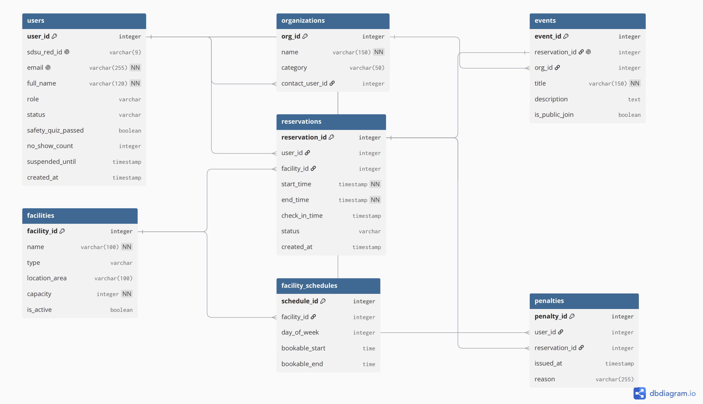
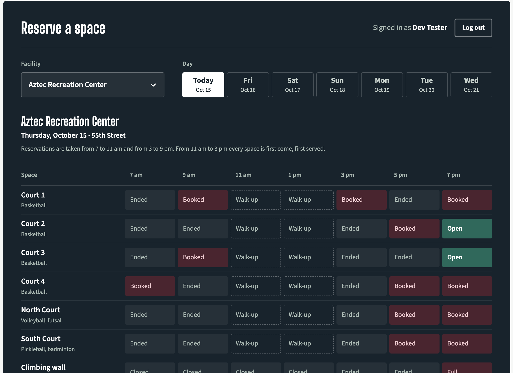

Download the PDF
CourtConnect technical document (PDF)
Draft, 15 pages: design, implementation, SQL, user guide
ER diagram

Schema
Seven tables, matching the ER diagram above. Columns, types and keys come from the diagram, and the CHECK and default rules are added in the DDL. The design is written with standard SQL (PostgreSQL) types; the running database is Cloudflare D1, which uses SQLite types, so Implementation shows how each one maps. Two columns marked added in implementation aren't on the diagram.
users
| Column | Type | Constraints |
|---|---|---|
user_id | SERIAL | Primary key |
sdsu_red_id | VARCHAR(9) | Unique, 9 digits |
email | VARCHAR(255) | Not null, unique |
full_name | VARCHAR(120) | Not null |
password_hash | VARCHAR(255) | Not null. PBKDF2 hash, never the password itself (added in implementation) |
role | VARCHAR(10) | student, club, admin; default student |
status | VARCHAR(10) | active, warned, banned; default active |
safety_quiz_passed | BOOLEAN | Not null, default false |
no_show_count | INTEGER | Not null, default 0 |
suspended_until | TIMESTAMP | Null unless temporarily locked out |
created_at | TIMESTAMP | Not null, default now() |
facilities
| Column | Type | Constraints |
|---|---|---|
facility_id | SERIAL | Primary key |
code | VARCHAR(40) | Not null, unique. The space ID the booking page uses, such as arc-court-1 (added in implementation) |
name | VARCHAR(100) | Not null |
type | VARCHAR(20) | court, field, pool, gym, studio, other |
location_area | VARCHAR(100) | |
capacity | INTEGER | Not null, greater than 0 |
is_active | BOOLEAN | Not null, default true |
facility_schedules
| Column | Type | Constraints |
|---|---|---|
schedule_id | SERIAL | Primary key |
facility_id | INTEGER | Foreign key to facilities, not null |
day_of_week | INTEGER | 0 to 6 (0 = Sunday) |
bookable_start | TIME | Not null |
bookable_end | TIME | Not null, after bookable_start |
reservations
| Column | Type | Constraints |
|---|---|---|
reservation_id | SERIAL | Primary key |
user_id | INTEGER | Foreign key to users, not null |
facility_id | INTEGER | Foreign key to facilities, not null |
start_time | TIMESTAMP | Not null |
end_time | TIMESTAMP | Not null, after start_time |
check_in_time | TIMESTAMP | Null until check-in |
status | VARCHAR(12) | booked, checked-in, no-show, cancelled; default booked |
created_at | TIMESTAMP | Not null, default now() |
organizations
| Column | Type | Constraints |
|---|---|---|
org_id | SERIAL | Primary key |
name | VARCHAR(150) | Not null, unique |
category | VARCHAR(50) | club, fraternity, sorority |
contact_user_id | INTEGER | Foreign key to users, not null |
events
| Column | Type | Constraints |
|---|---|---|
event_id | SERIAL | Primary key |
reservation_id | INTEGER | Foreign key to reservations, not null, unique |
org_id | INTEGER | Foreign key to organizations, not null |
title | VARCHAR(150) | Not null |
description | TEXT | |
is_public_join | BOOLEAN | Default false; true means any student can join |
penalties
| Column | Type | Constraints |
|---|---|---|
penalty_id | SERIAL | Primary key |
user_id | INTEGER | Foreign key to users, not null |
reservation_id | INTEGER | Foreign key to reservations; null if not tied to a booking |
issued_at | TIMESTAMP | Not null, default now() |
reason | VARCHAR(255) | Not null |
Relationships
- A user makes many reservations; each reservation belongs to one user and one facility.
- A facility has many reservations and many bookable windows in facility_schedules.
- An organization has one contact user and hosts many events.
- Each event is held on exactly one reservation, so its place and time come from that reservation.
- A user receives many penalties; a penalty can point at the reservation that caused it.
Business rules
- One reservation per student per day. A unique index on (
user_id, the date ofstart_time) for active reservations. - Bookable hours and capacity. A booking must fall inside a
facility_scheduleswindow, and overlapping active reservations can't exceed the facility'scapacity. Outside the windows, spaces are first come, first served. - Check-in window. A student checks in from 15 minutes before the slot until it ends, which fills
check_in_time. - No-show penalties. A reservation not checked in by the end of its slot becomes
no-show, which adds apenaltiesrow and recountsno_show_count. One no-show sets the user towarnedand locks them out of reserving for 7 days throughsuspended_until; three set them tobanned. - Club events. A space can't be reserved during a club or organization event held there.
- Safety quiz. A user must have
safety_quiz_passedbefore booking.
Implementation
CourtConnect runs as three pieces: the website on GitHub Pages, an API on Cloudflare Workers, and a Cloudflare D1 database behind the API. The source is in the GitHub repository: api/schema.sql for the DDL, api/src/index.js for the API and its queries, and api/scripts/build-seed.mjs for the sample data.
DBMS and tools
- Cloudflare D1 is the database. It is SQLite run by Cloudflare, so it supports the constraints, indexes, joins and subqueries the design needs, with no database server for us to install or maintain.
- Cloudflare Workers hosts the API, written in JavaScript. The browser never talks to the database directly: every request goes through the Worker, which checks who is signed in and applies the booking rules.
- Wrangler, Cloudflare's command-line tool, creates the database, runs the schema and seed files, and deploys the Worker.
- GitHub Pages hosts the website: plain HTML, CSS and JavaScript with no build step.
We chose this setup because it is free at our scale, needs no server of our own, and keeps the website on GitHub Pages where it already was. One file, js/facilities.js, holds the facility list, hours, slot times and penalty rules, and the booking page, the API and the seed script all read it, so the three can't disagree about the rules.
How a booking moves through the system
- The student signs in on the booking page. The API checks the password against the stored hash and returns a signed log-in token.
- To show the schedule, the page asks the API for one day. The API counts that day's reservations per slot and returns the counts along with any club events.
- When the student reserves a slot, the page sends the space, date and time with the token. The API checks the rules and inserts the reservation, or returns an error code that the page turns into a message.
- At the court, the student checks in, which fills
check_in_time. A booking that ends without one is marked as a no-show the next time that student uses the app.
From the design to SQLite
SQLite has fewer column types than PostgreSQL, so the schema maps them like this. The CHECK constraints keep the same limits the design's types would.
| Design type | In D1 (SQLite) | Notes |
|---|---|---|
| SERIAL | INTEGER PRIMARY KEY AUTOINCREMENT | IDs are never reused. |
| VARCHAR(n) | TEXT | Lengths are checked by the API; allowed values by CHECK constraints. |
| TIMESTAMP | TEXT as YYYY-MM-DD HH:MM | San Diego local time, so times sort and compare correctly as plain text. |
| TIME | TEXT as HH:MM | Used for the bookable windows. |
| BOOLEAN | INTEGER 0 or 1 | With CHECK (x IN (0, 1)). |
DDL
The full DDL for all seven tables is in api/schema.sql. The reservations table carries most of the rules:
CREATE TABLE reservations (
reservation_id INTEGER PRIMARY KEY AUTOINCREMENT,
user_id INTEGER NOT NULL REFERENCES users (user_id),
facility_id INTEGER NOT NULL REFERENCES facilities (facility_id),
start_time TEXT NOT NULL,
end_time TEXT NOT NULL,
check_in_time TEXT,
status TEXT NOT NULL DEFAULT 'booked'
CHECK (status IN ('booked', 'checked-in', 'no-show', 'cancelled')),
created_at TEXT NOT NULL DEFAULT (strftime('%Y-%m-%d %H:%M', 'now')),
CHECK (end_time > start_time)
);
-- One reservation per student per day. Cancelling frees the day up;
-- a no-show still uses it.
CREATE UNIQUE INDEX reservations_one_per_day
ON reservations (user_id, date(start_time))
WHERE status <> 'cancelled';
-- Counting who holds a slot (the capacity check and the day view).
CREATE INDEX reservations_slot ON reservations (facility_id, start_time);Other constraints: users.email and users.sdsu_red_id are unique, and the RedID must be exactly 9 digits; users.role and users.status only allow their listed values; facilities.capacity must be greater than 0; facility_schedules requires bookable_end > bookable_start and a weekday from 0 to 6; and events.reservation_id is unique, so each event has exactly one reservation. Deleting a facility deletes its schedule windows (ON DELETE CASCADE), and deleting a reservation deletes its event.
Enforcing the booking rules
Each rule is enforced in the database where SQL can express it, and in the API's queries otherwise. The booking page also checks most of them so it can explain a problem before sending anything, but it is never the only check.
| Rule | Where | How |
|---|---|---|
| One reservation per day | Database and API | The reservations_one_per_day unique index. The API checks first so it can return a clear message, and the index still blocks two requests that arrive at the same moment. |
| Capacity | API, in one SQL statement | The insert only happens while fewer than capacity active reservations hold that slot (see below). Checking and inserting in one statement means two students can't both take the last spot. |
| Bookable hours and walk-up time | API | The slot must fall inside a facility_schedules window for that weekday. The 11 am to 3 pm walk-up block has no windows, so it can't be booked. |
| Up to 7 days ahead, not in the past | API | Compares the requested date and start time with the current San Diego time. |
| No booking during club events | API | Rejects the slot if it overlaps a reservation that has a row in events. |
| Safety quiz | API | The quiz answers are checked on the server; a pass sets safety_quiz_passed = 1, which reserving requires. |
| Check-in window | API, in the UPDATE | The update only matches a booked reservation of that student whose slot starts within 15 minutes or has started, and hasn't ended. |
| Cancel only before the slot starts | API, in the UPDATE | The update only matches the student's own booked reservation with start_time still in the future. |
| No-shows, lockouts and bans | API, in one transaction | See no-show processing below. |
| Allowed values, valid times, positive capacity | Database | CHECK constraints on every table. |
Key queries
A day's schedule. One query returns every active reservation that day, with the club name when it belongs to an event. The API then counts students per slot and lists event slots separately, which is what the schedule colors show.
SELECT f.code, r.start_time, r.end_time, o.name AS org
FROM reservations r
JOIN facilities f ON f.facility_id = r.facility_id
LEFT JOIN events e ON e.reservation_id = r.reservation_id
LEFT JOIN organizations o ON o.org_id = e.org_id
WHERE r.status <> 'cancelled' AND r.start_time >= ?1 AND r.start_time < ?2Reserving a slot. The capacity check and the insert are one statement. If the slot is full, the SELECT returns no row, nothing is inserted, and the API reports that the slot was taken.
INSERT INTO reservations (user_id, facility_id, start_time, end_time, status, created_at)
SELECT ?1, ?2, ?3, ?4, 'booked', ?5
WHERE (SELECT COUNT(*) FROM reservations
WHERE facility_id = ?2 AND start_time = ?3 AND status <> 'cancelled')
< (SELECT capacity FROM facilities WHERE facility_id = ?2)
RETURNING reservation_idA student's reservations. The student's bookings from the past 7 days onward, excluding cancelled ones and club event bookings, ordered by start time. This feeds "Your reservations" and the check-in card.
Checking in. A single update that only succeeds inside the window:
UPDATE reservations SET status = 'checked-in', check_in_time = ?1
WHERE reservation_id = ?2 AND user_id = ?3 AND status = 'booked'
AND start_time <= ?4 -- now + 15 minutes
AND end_time > ?1 -- the slot hasn't ended
RETURNING reservation_idNo-show processing. There's no background job. Whenever a student loads their reservations or tries to book, the API finds their booked reservations whose slot has already ended, then runs these statements together as one D1 batch, which commits all of them or none:
- Set each one's status to
no-show. - Insert a
penaltiesrow for it, skipped if one already exists for that reservation, so a no-show is never counted twice. - Recount the student's no-show penalties into
no_show_count. At 3 or more, setstatustobanned; otherwise set it towarnedand setsuspended_untilto 7 days from now.
Reserving then refuses a banned student, or one whose suspended_until hasn't passed.
Security
- Passwords are hashed with PBKDF2-SHA256 (100,000 iterations and a random salt per user). The plain password is never stored.
- Every request that reads or changes reservations needs a log-in token signed with a secret kept in Cloudflare, not in the code. The API takes the student from the token, never from the request, and every update also matches
user_id, so one student can't see, cancel or check in another's booking. - Every query uses bound parameters (the
?placeholders above), never text pasted into SQL, which prevents SQL injection. - Sign-up and log-in are limited to 10 attempts per minute per IP address, and errors return a short code, never database details.
Sample data
api/scripts/build-seed.mjs writes the sample data from js/facilities.js. A typical run creates 47 facilities across 6 venues with 390 weekly bookable windows, 56 users (two demo log-ins plus sample students and club contacts), 4 organizations, 20 club events, about 500 reservations over the past and coming week, and the penalties for the sample no-shows. Dates are relative to the day the seed runs, so the schedule always has realistic activity, and a seeded random generator makes the same day produce the same bookings every time. Only the demo accounts can log in; every other seeded account gets a random password.
Testing
The test script api/test/api-test.mjs runs the real API code against the real schema.sql and seed data, in a local SQLite database that stands in for D1. It moves the clock forward to test check-in windows and no-shows, and inserts rows directly with SQL to show the database constraints hold even without the API. Anyone can rerun it with npm test in the api folder (Node 22 or later, no Cloudflare account needed).
All 36 tests pass. The log-in rate limit is a Cloudflare feature, so it isn't covered locally.
| Area | Scenario | Expected | Result |
|---|---|---|---|
| Accounts | Sign up with a valid RedID and @sdsu.edu email | 200, account created, quiz not passed | Pass: 200, quizPassed=false |
| Accounts | Password is stored hashed, not as plain text | pbkdf2$100000$… hash | Pass: pbkdf2$100000$… |
| Accounts | Sign up again with an email already in use | 409 email-taken | Pass: 409 email-taken |
| Accounts | Sign up with an 8-digit RedID | 400 bad-request | Pass: 400 bad-request |
| Accounts | Sign up with a non-SDSU email | 400 bad-request | Pass: 400 bad-request |
| Accounts | Log in with the wrong password | 401 bad-credentials | Pass: 401 bad-credentials |
| Security | Log in with SQL injection text in both fields | 401 bad-credentials (bound parameters) | Pass: 401 bad-credentials |
| Security | List reservations without a token | 401 signed-out | Pass: 401 signed-out |
| Security | Change the user ID inside a token | 401 signed-out (signature no longer matches) | Pass: 401 signed-out |
| Safety quiz | Reserve before passing the quiz | 403 quiz-required | Pass: 403 quiz-required |
| Safety quiz | Submit the quiz with wrong answers | 400 quiz-failed, lists the wrong questions | Pass: 400 quiz-failed [0,1,2] |
| Safety quiz | Submit the quiz with correct answers | 200, safety_quiz_passed = 1 | Pass: 200, db=1 |
| Reserving | Reserve an open slot inside a reservation window | 200, status booked | Pass: 200, booked |
| Reserving | Reserve a second slot on the same day | 409 daily-limit | Pass: 409 daily-limit |
| Reserving | Reserve an 11 am walk-up slot | 400 not-reservable | Pass: 400 not-reservable |
| Reserving | Reserve a slot yesterday | 400 not-reservable | Pass: 400 not-reservable |
| Reserving | Reserve more than 7 days ahead | 400 not-reservable | Pass: 400 not-reservable |
| Reserving | Reserve a space that doesn't exist | 400 not-reservable | Pass: 400 not-reservable |
| Reserving | Second student reserves the same 1-person slot | 409 slot-taken | Pass: 409 slot-taken |
| Reserving | Reserve a slot during a club event | 400 not-reservable | Pass: 400 not-reservable |
| Security | Student B cancels student A's reservation | 409 too-late (row not touched) | Pass: 409 too-late, A's status=booked |
| Cancelling | Cancel your own booking before it starts | 200, status cancelled | Pass: 200, cancelled |
| Cancelling | Book a different slot that day after cancelling | 200 booked (cancelled booking frees the day) | Pass: 200, booked |
| Check-in | Check in 60 minutes before the slot | 409 check-in-closed | Pass: 409 check-in-closed |
| Check-in | Check in 10 minutes before the slot | 200, checked-in, check_in_time saved | Pass: 200, checked-in at 2026-11-18T08:50 |
| Cancelling | Cancel a booking you already checked in to | 409 too-late | Pass: 409 too-late |
| No-shows | Slot ends without a check-in, then the student opens the app | status no-show, 1 penalty, user warned, locked out 7 days | Pass: no-show, penalties=1, warned, until 2026-11-26 17:05 |
| No-shows | Student with an active lockout tries to reserve | 403 suspended | Pass: 403 suspended |
| No-shows | Open the app again (no-show already processed) | still 1 penalty (no duplicates) | Pass: penalties=1 |
| No-shows | Three missed bookings | no_show_count 3, user banned | Pass: no_show_count=3, banned |
| No-shows | Banned student tries to reserve | 403 banned | Pass: 403 banned |
| Constraints | INSERT a second active reservation for the same student and day | rejected by reservations_one_per_day | Pass: Rejected: UNIQUE index reservations_one_per_day |
| Constraints | INSERT a reservation that ends before it starts | rejected by CHECK (end_time > start_time) | Pass: Rejected: CHECK constraint failed |
| Constraints | INSERT a reservation with an unknown status | rejected by CHECK on status | Pass: Rejected: CHECK constraint failed |
| Constraints | INSERT a user whose RedID has letters | rejected by CHECK on sdsu_red_id | Pass: Rejected: CHECK constraint failed |
| Constraints | INSERT a facility with capacity 0 | rejected by CHECK (capacity > 0) | Pass: Rejected: CHECK constraint failed |
Limitations & future work
- Fixed 2-hour slots. Every space uses the same 2-hour slots. Shorter sessions often make more sense, for example 1 hour for pool lanes and weight areas. That would mean a slot length per facility in
js/facilities.js; the database already stores exact start and end times, so the tables wouldn't change. - No admin or club screens yet. Club events and organizations come from the seed data. A club view for posting events and an admin view for managing facilities, lifting bans and reviewing penalties are next.
- No-shows are processed when the student returns. A missed booking becomes a no-show the next time that student opens the app, which is enough to enforce the rules but leaves reports out of date until then. A scheduled Worker could process them every hour.
- Email isn't verified. Anyone can sign up with an @sdsu.edu address or RedID that isn't taken yet. Production would verify the email or use SDSU single sign-on.
- Log-out doesn't end the token. Log-in tokens last 7 days, and logging out only clears the browser. Ending every session means changing the signing secret.
- Capacity counts slots that start together. This is exact because every booking uses the same slot grid. If slot lengths ever vary, the check should count overlapping times instead of matching start times.
Screenshots
